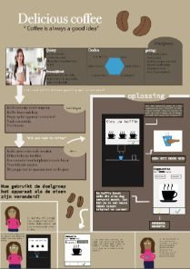

UCD
 UCD was het eerste lastige vak die ik had in dit jaar.
Het was pittig, maar toch is het me gelukt.
Ik ben trots op mijn uiteindelijke poster.
UCD was het eerste lastige vak die ik had in dit jaar.
Het was pittig, maar toch is het me gelukt.
Ik ben trots op mijn uiteindelijke poster.
Project 2 individueel vond ik heel leuk.
Het was het eerste project waarbij je zelf mocht kiezen en bepalen
wat je wilde doen. Ik ben erg trots op het uiteindelijke resultaat
van mijn app voor de opdrachtgever ISGA.
Maatschappij en Interactie was een leuk vak.
Ik ben trots op mijn case over Instagram.
Project 2 team Slaap, een leuk project.
Ik ben trots op het idee dat ik een fysiek product hebt bedacht en ontworpen,
samen met drie medestudenten.
Informatie architectuur is een moeilijk vak
waarbij je met veel dingen rekening moet houden.
Ik ben wel trots op het eindresultaat van mijn "Heel holland bakt" case.
De app fantasyroad (samen met het fysieke gedeelte)
is het project waar ik tot nu toe het meest trots op ben.
Het is voor de opdracht gever NS. Ik ben erg trots op dit project.